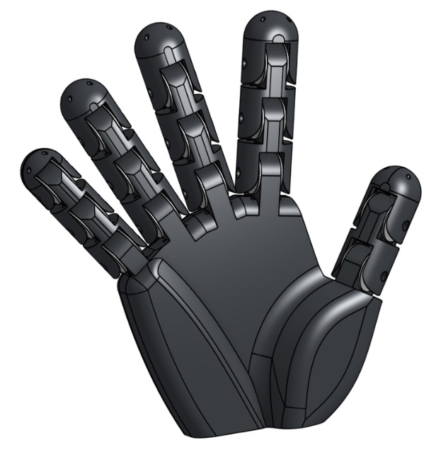
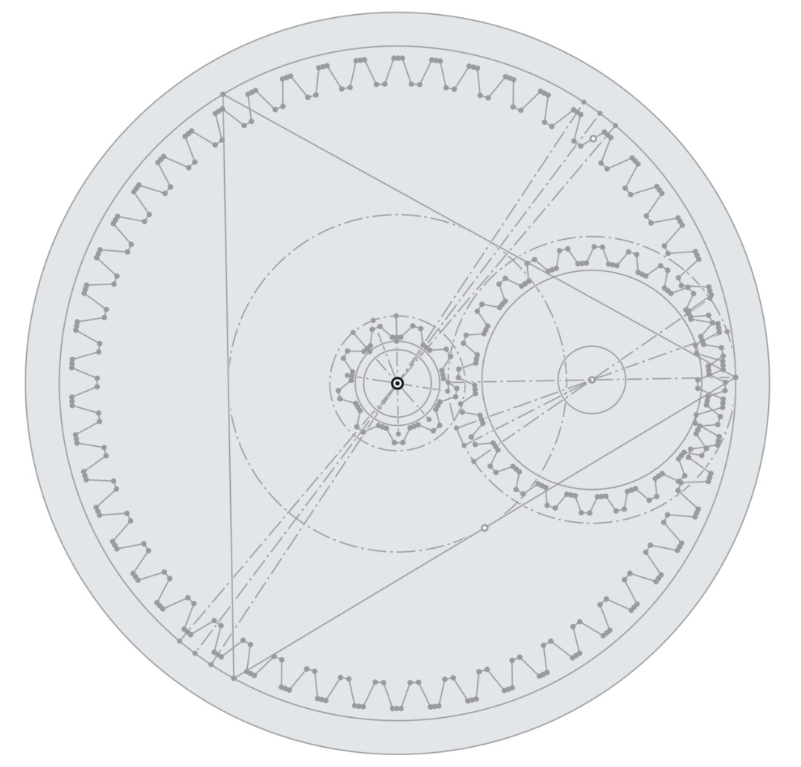

Aerial Bionic Hand
Redefine how humans interact with technology and the world around us.

Origin Story
While building a transforming tricopter drone, I learned that my grandmother had fallen down the stairs,
breaking her arm and unable to reach her phone for help. That moment made me think deeply about how we
could extend human capability—to manipulate and control objects beyond our physical reach, reducing the
need for direct contact and preventing harm. Many technologies tackle specific challenges—accessibility,
exploration, search and rescue—but few aim to
unify them into a single solution. I decided to start with one of humanity’s most powerful tools: the hand.
My vision is an aerial bionic hand—a device that not only mirrors human dexterity but also extends our reach
into environments too dangerous or distant for us to access. With a simple extension of the arm and a curl of
the finger, we could take problems literally into our own hands—using mechanical precision and strength to act
safely at a distance. Whether it’s cutting a seatbelt to free a trapped passenger, delivering medical aid to
soldiers, retrieving a phone after a fall, or simply grabbing a cup of coffee across the room, this aerial
bionic hand brings the future of human-robot interaction closer to the everyday world.
Engineering the Solution
Hardware :
- MCU/Radio Link: ESP32 handling telemetry and user input bridging
- Driver: ODrive to synchronize and current-control the BLDC motors
- Finger Actuation: BLDC motors with planetary reduction for smooth, high-torque finger pulls
- Center Thrust: High-torque pancake motor with a ducted prop as primary lift
- Angular Thrust: Micro motors with props to roll and pitch the wrist orientation in flight
- Sensing: EMG + flex arrays to map the operator’s intent into proportional gestures
- Structure: Carbon Fiber Reinforced Polymer for stiffness at low weight
- IMU: ICM-20948 to capture 9-DOF state feedback with minimal power consumption
Software:
loop_fixed_2ms() { // 500 Hz
imu_read();
// Reads gyro/accel/magnetometer data from IMU
quat = mahony_update(gyro, accel, mag);
// Runs Mahony filter to fuse gyro + accel + ma)
// into a stable quaternion
att_err = att_target - quat_to_euler(quat);
// Converts quaternion into euler angles
rate_cmd = angle_pid(att_err) + feedforward;
// Computes the attitude error: the difference between
// where the hand should be and where it is
motor_cmds = mix(rate_cmd, thrust_target);
// PID controller generates angular-rate commands;
// Feed-forward terms anticipate motion
actuators_write(motor_cmds);
// Converts roll/pitch/yaw + thrust commands
// into motor outputs w/ a mixer matrix
}
loop_10ms() { // 100 Hz
emg_feats = emg_process(raw_emg);
// Filters and extracts features from EMG signals
cmd = gesture_map(emg_feats, mode);
// Maps muscle patterns to commands or gestures
att_target = shape(cmd.attitude);
// low-pass filtering/slew-rate limiting for smooth motions
thrust_target = shape(cmd.thrust);
safety_check();
}
loop_25ms() { // 40 Hz
if (pos_ctrl_enabled) {
pos_err = pos_target - pos_estimate();
// Difference between desired and current position
att_target += pos_pid(pos_err);
// Converts position error into small attitude corrections
}
telemetry_send();
// Sends data (orientation, battery, EMG state)
// back to EMG for monitoring
}

My Planetary Drive
To actuate the bionic hand mechanism, I needed an ultra-light and ultra-small planetary drive to increase the torque generated by the motor. As the majority of planetary drives out there are heavy, and too large for my usage, I designed my own 10x ratio planteary drive with CAD.